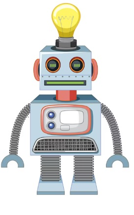

Bienvenido o Bienvenida a este blog. Aquí encontrarás información sobre tecnologías y temas interesantes.
Me presento, me llamo Luis y soy Ingeniero Mecatrónico nacido en México, Chihuahua. Este es un blog para compartirte diversos temas.
En notas se encuentra los articulos interesantes para leer sobre temas relevantes✔.